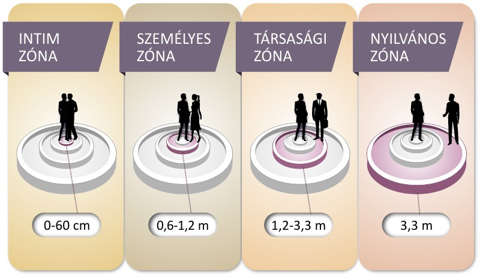
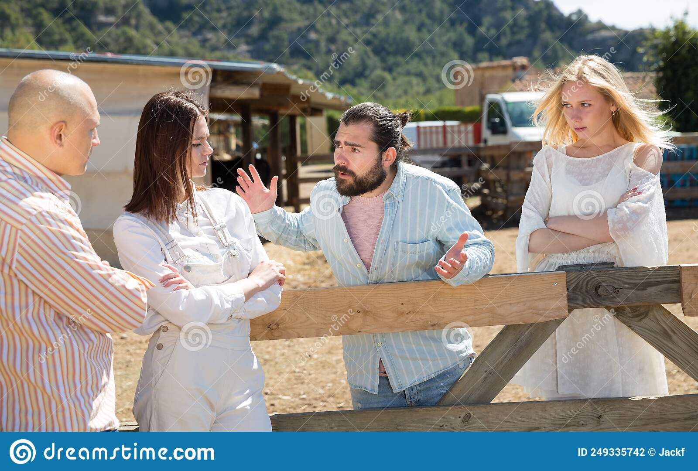
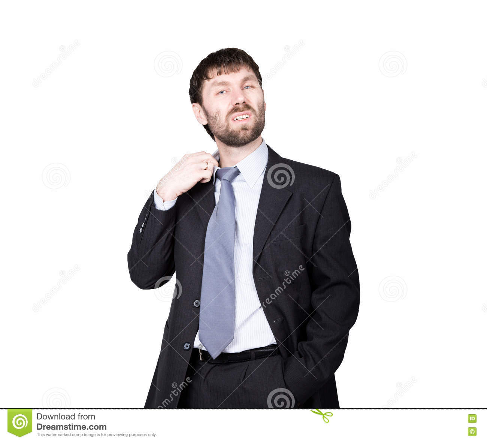

A kommunikáció információk, ismeretek, érzelmek átadása, cseréje, valamilyen eszköz illetve jelrendszer segítségével.
A kommunikáció tényezői
ADÓ-VEVŐ: egy párbeszéd során az adó és a vevő cserélgetik helyüket, de mindegyik pillanatban mindketten adók is, vevők is, hiszen míg egyikük beszél, a másik valamilyen módon (pl. mimikával) szintén információkat közöl).
ÜZENET: A közlés tartalma; amit a vevővel közölni szueretnénk.
CSATORNA: az a fizikai közeg, amely lehetővé teszi – fizikálisan, a gyakorlatban – a közlésfolyamat létrejöttét. Pl. a levegő hanghullámai, telefonvonal, világháló stb.
KÓD: az a jelrendszer, amely a résztvevők számára közös (pl. a magyar nyelv)
BESZÉDHELYZET: ide tartoznak a folyamat tér és időviszonyai, egyéb külső körülményei, a szituáció.
A kommunikáció funkciói
A kommunikációnak hat funkcióját szokás megkülönböztetni.
Referenciális (ábrázoló-leíró) célja a tájékoztatás, ismeretközlés. Ennek megfelelően leginkább a kijelentő mód kötődik hozzá. Tájékoztató funkciót töltenek be a használati utasítások, a szakkönyvek, a történetmesélés. Konatív (felhívó): célja, hogy a hallgatót rávegye valamilyen cselekvésre, vagy épp eltiltsa. Épp ezért gyakrabban kötődik hozzá a felszólító mód. Gyakran találkozunk ezzel az iskolai tanórákon (állj fel!), házirendekben (tilos dohányozni) Emotív (érzelemkifejező): Ebben az esetben az adó a megnyilatkozásával a saját érzelmeit osztja meg a hallgatóval. Az érzelemkifejezés legjellegzetesebb nyelvi eszközei az indulatszók. Vannak olyan szövegtípusok, amelyek egyértelműen ide sorolhatók, pl. a szerelmi vallomás. Fatikus (kapcsolatteremtő, kapcsolattartó és kapcsolatlezáró): Ebben az esetben az adó a megnyilatkozásával konnunikációt kezdeményez (pl. köszönés, megszólítás); a csatorna meglétét és minőségét ellenőrzi ( pl. Hallottad, amit mondtam?), illetve lezárhatja a kommunikációs csatornát (Elköszönés). Metanyelvi (értelmező): A metanyelvi funkció esetében a nyelv segítségével a nyelvről teszünk megállapításokat, így ide tartozik minden nyelvtankönyv, nyelvtanóra, de olyan egyszerű hétköznapi kérdések is, pl. hogy mit jelent ez a szó? Poétikai (esztétikai): ez a funkció a szépirodalomban érvényesül leginkább, de egy pohárköszöntő is tartalmaz olyan szavakat, melyek a közlendőt széppé teszik. A poétikai funkció fontos és gyakori összetevői a szóképek és az alakzatok, illetve minden olyan eszköz, ami a nyelvi szépség és választékosság irányába mutat.
A sikeres kommunikációA sikeres és hatékony kommunikáció
A kommunikáció típusai
A kommunikációt számos szempont szerint csoportosíthatjuk.
I. A kommunikációban résztvevő személyek száma szerint:
1. intraperszonális (belső) kommunikáció:A személy mintegy magában beszél - pl. tanulás, gondolkodás
2. interperszonális (személyek közötti) kommunikáció: pl. szállodai alkalmazott és vendég között
3. csoportkommunikáció: pl. családi, munkahelyi és más közösségekben
4. tömegkommunikáció: pl. tévé, rádió
2. A kommunikációban alkalmazott jelrendszer szerint:
A. verbális: a természetes emberi nyelv jelrendszerét használja
B. nem verbális (nonverbális): nyelven kívüli jelrendszert használ, nem szavakkal kommunikál (testbeszéd, mimika)
Vizuális jelek alkalmazása: képek, színek pl.: a szállodában elhelyezett piktogramok
Vokális jelek alkalmazása: hangerő, hanglejtés, hangnem pl.: dühös vendég hangszíne
Egyéb jelek alkalmazása: szaglás, ízlelés, tapintás pl.: finom illatok szállnak az étterem felől
3. A kommunikáló felek egymáshoz való viszonya szerint:
A. közvetlen (szemtől szembe) kommunikáció: A feladó és a címzett egyszerre vesz részt a kommunikációban, tehát egy helyen és egy időben vannak jelen. Pl.: a szálloda bejáratánál az alkalmazott üdvözli a vendéget
B. közvetett kommunikáció: A feladó és a címzett térben és/vagy időben távol vannak egymástól. Pl.: a vendég telefonon érdeklődik a szobaszerviz szolgáltatásairól (térben
nincsenek együtt), a vendég számára üzenet érkezett, amelyet a portán vesz át (időben nincsenek együtt az üzenet küldővel(a portással igen)).
4. A visszacsatolás megléte, ill. hiánya szerint:
A. egyoldalú (egyirányú) kommunikáció:Az a kommunikáció, amikor nincs visszacsatolás, nincs módja a címzettnek válaszolnia. pl.:TV nézés, szállodai prospektus elolvasása
B. kölcsönös (kétirányú) kommunikáció: van visszacsatolás, a feladó és a vevő szerepe folyamatosan változik. Pl.: telefonon történő szobafoglalás
5. A szervezettség foka szerint:
1. intézményes kommunikáció: Az üzenet kibocsátója egy vállalat, intézmény, szervezet. Pl.: szállodát népszerűsítő film
2. személyes kommunikáció: Egy vagy több magánszemély kommunikációja pl.:vendég elégedettségi kérdőív kitöltése
A VERBÁLIS KOMMUNIKÁCIÓ
A verbális kommunikáció alapja a nyelv, amely a legáltalánosabb, legtökéletesebb és legfontosabb kommunikációs eszközünk. A verbális kommunikáció a szóbeliséget, a megfogalmazást jelenti. Ez a közlési forma elsősorban az információ átadására szolgál. A hatékonysághoz azon alapelvek betartása szükséges, amelyek általában igazak a kommunikációra: a cél meghatározása, célcsoport meghatározása, célcsoport ismerete, és annak megfelelő megfogalmazás és stílus. Pontos, egyértelmű kifejezések, szépen formált, nyelvtanilag hibátlan mondatok, a mondanivaló logikus felépítése.
A nyelvnek két formáját alkalmazunk: a beszédet és az írást.
Beszéd
A beszéd a nyelv vokális kifejeződése.
Két tényezője van, amelyek egymástól nem választhatók szét : maga a nyelv és annak alkotórészei( Szavak és nyelvtani szabályok).
Nagyon fontos tudás a jó kommunikáció érdekében a tökéletes nyelvismeret. A másik tényezője a megértést segítő vokális eszközök, azaz a hangsúly, hangszín és hangsebesség, a szünet, a tempó.
A szempontok
Beszéd
Írás
Rendelkezésre állás ideje
Több százezer éves kommunikációs forma
Kb. ötezer éves kommunikációs forma
Az információhoz jutás sebessége
Gyors és közvetlen
Lassú és közvetett
Az információ időbeli és térbeli felhasználhatósága
Múlandó, egyszeri és megismételhetetlen jelenség; időhöz kötött
Maradandó, időben kötetlen; sokszorosítható.
Eszközigénye
Nem kell segédeszköz
Segédeszköz szükséges a létrehozásához
Az információ érzékelése
Auditív - hallási - jelenség
Vizuális - látási- jelenség
A nem verbális jelek szerepe
A nem verbális és a vokális jelek kiegészítik
Az írás jelei erősíthetik vagy ronthatják az üzenetet
Befogadója
A hallgatóhoz szól - kevés idő áll az értelmező rendelkezésére
Az olvasóhoz szól - hosszabb idő áll az értelmezésre
Értelmezés tere
Térben kötött
Térbelileg kötetlen
Szabályossága
Laza szerkesztés, eltérhet a normától
Kötött, normatív szerkesztés jellemzi
Az infromáció mennyisége
Kevesebb információt ad; nagy redundancia
Sok információt közöl; kis redundancia
Visszacsatolás módja
Azonnali visszajelzés lehetősége
Nincs azonnali visszajelzés
A nem verbális kommunikáció
A nem verbális jelek fogalma, jelentőségük
A nem verbális - nem nyelvi - jelek kommunikációs folyamat azon jelei, melyek nem bonthatók elemeikre, azaz analógok, és kiegészítik, illetve segítik értelmezni a közlésfolyamatot. Legalább olyan fontosak, mint a verbális kódok, hiszen ezekből tájékozódunk például a partner érzelmi állapotáról, attitűdjéről. Emellett segítik a kapcsolat felépítését, fenntartását és lezárását is. (pl. A köszönést kísérő jelek segítségével)
A nem verbális jelek funkciója
Tájékoztatnak a részt vevő személyekről:Azonnal látjuk, milyen érzelmi állapotban val a partnerünk. Abban is segítenek, hogy felismerjük, milyen a partner hozzánk való viszonya - elfogadó, elutasító vagy közömbösek vagyunk számára.
Irányítják a kommunikációt:A kommunikáció során például nem verbális jelekkel mutatjuk, hogy mi is beszélni szeretnénk - tekintetváltással, előrehajlással, egyéb gesztusokkal.
Tagolják a szöveget, kiemelik a fontosat:Ebben főleg a vokális elemek, azaz a hangsúly, a hangmenet, a beszédtempó és a szünet játszik szerepet.
A nem verbális kommunikáció jellemzői
Kevésbé kontrollált A non verbális kommunikáció jelei még tudatos elfojtásuk esetén is alapszinten előjönnek.
Gyorsabbak , azaz gyorsabban adjuk és vesszük őket, mint a szóbeli üzeneteket.
Az esetek nagy részében kevésbé egyértelműek , mert összetettebbek a jelek, így a vevőnek több mmindenre kell figyelni.
Jellemzően érzelmeket közölnek , míg a szóbeli üzenetek gondolatokat.
A nem verbális kommunikációban nincs egyezményes jelrendszer, a beszéd ellenben tanult, egyezményes rendszer.
A nem verbális kommunikáció spontán , vétele ritkán tudatos, szemben a tudatosan érzékelt és adott beszéddel.
Néhány nem verbális kód Forrás:https://virtualspeech.com/
A nem verbális jelek felosztása eredetük szerint
Örökölt jelek: Minden emberre jellemzőek, a világ minden táján azonos jelentéssel bírnak: ezek az alapérzelmeket - öröm, meglepetés, szomorúság, félelem, harag, érdeklődés és undor - kifejező arcjelek.
Ösztönös jelek:Egy-egy nyelvi közösségre jellemző, kultúrafüggő jelek. Ilyen például a fejbólintás.
Egyezményes jelek:Szűkebb körben használatos, tudatosan tanult jelek tartoznak ide. Például ilyenek a sportban és a hadseregben alkalmazott kézjelek.
A nem verbális jelek típusai
A hangjelek - vokális jelek: Jelentőségük az, hogy a kommunikáció hatásában 38 %-ot tulajdonítanak a hangjeleknek. Ezek a hangsúly, hanglejtés, beszédtempó, ritmus és a szünet. Ezek a jelek érzelmeinket, állapotunkat, nemi hovatartozásunkat tükrözik; szerepet játszanak a mondanivaló tagolásában, a lényeg kiemelésében.
Gesztusok - fej, a kéz, a kar és a láb gesztusai
Az arc jelei - tekintet, mimika (arcjáték)
Testtartás
Térköz
Érintés jelei
Emblémák, kulturális szignálok
Gesztusok - mozdulatok
Darwin szerint a gesztusok, az egyes érzelmeket kifejező mozdulatok velünk született adottságok. Több kutatás is bizonyítja, hogy minden kultúra embere ugyanazokat az alapvető arcjátékot, gesztusrendszert használja alapvető érzelmei kifejezésére. Alapvető - tehát inden emberre jellemző - gesztusok:
A nem verbális jel
Jelentése
vállvonogatás
tanácstalanság
keresztbe font kezek
bezárkózás
mosoly
jókedv
szájeltakarás
hazugság
dobolás a kézzel az asztalon
türelmetlenség
A gesztusok közül kiemelkedik a tenyér és a kézfogás, amelyek önmagukban is külön jelentőséggel bírnak. (pl. nyitott tenyér-becsületesség, nincs rossz szándék, stb.) A fej gesztusai közül az oldalra enyhén hajtott fej a kíváncsiságot, érdeklődést fejezi ki. A fej ingatása a bizonytalanságot. A láb gesztusai közül a keresztbe vetett lábnak és a bokakulcsolásnak van szerepe. A gesztusok is változnak országonként. Jellemzően a déli országokban többet gesztikulálnak az emberek, és szélesebb mozdulatokkal, mint az északi országokban.
Ahogy a japánok magukat értik -orra mutatnak
Tekintet - szemkontaktus, szemjelzések
A figyelést a szemkontaktus felvételével - ránézünk arra, akihez szólni akarunk vagy aki nekünk szól - és fenntartásával lehet legjobban kifejezni. Ha nem akarunk az illetővel kommunikálni, akkor kerülni szeretnénk a szemkontaktust. A tárgyalás közben el-elkalandozó tekintet a beszélgetés befejezésének szándékára figyelmeztet. A szem irányítása tehát mindig a figyelem irányítását jelenti. A szemkontaktus felvétele ezért a leginkább pozitív visszajelzés, hiszen közvetlenül összekapcsolja a tekinteteket, és ezzel bizalmat teremt. A nézés sokféle lehet (szigorú, számon kérő, barátságos, stb.) A másik ember nézése, figyelése lehet ellenőrző jellegű (pl.: ha kissé lehunyjuk a szemünket és hátrahajtjuk a fejünket, de zavarba is hozhatjuk a beszélőt, ha pl.: beszéd közben folyamatosan a száját, vagy éppen a fülét, kezét nézzük. . A szemöldök is lehet érzelmek kifejezője - kifejezhet dühöt, zavarodottságot, érdeklődést, kíváncsiságot. Mozgatása betöltheti a tekintet irányításának szerepét: nézz csak oda... A lehunyt szem unalmat vagy álmosságot jelenthet, de koncentrációra is utalhat, és arra is, hogy az illető magányra, egyedüllétre vágyik. Öröklött emberi tulajdonság, hogy ha valami szokatlan ér bennünket, a pupillánk kitágul. Ha azonban olyasmit hallunk, ami nem tetszik, a pupilla összeszűkül. Mivel ez könnyen azonosítható, ezért használnak sokat napszemüveget . Az arab kultúrában például ez bevett szokás. Fontos illemszabály, tehát neked is betartandó: a, Illetlen dolog valakit hosszabb ideig megbámulni b, Ügyfél vagy vendég kiszolgálása esetén nem szabad a figyelmünknek elkalandoznia. Nyilván a túl sok nézés is ugyanolyan zavaró lehet, főleg meredt tekintettel.
A mimika (arcjáték)
A mimika, az arc mozdulatai is ősi kifejezéseket hordoznak. A mimika a szóbeli közléssel együtt jelenik meg, annak érzelmi tartalmáról tanúskodik. Tudnunk kell azonban, hogy a mimika jeleit egyes országokban nem azonos módon értelmezik: állítólag a kelet-ázsiai ember az elutasítás alkalmával is mosolyog. A mosoly a jókedv megnyilvánulása, a fogcsikorgatás az idegességé, vagy türelmetlenségé, esetleg agresszió kifejezése. A "pókerarc", a mozdulatlan, érzelmektől mentes arc, tanult viselkedés, amely csak ideig-óráig (pl.: egy kártyajáték erejéig) tartható fenn. Arckifejezésünk legtöbbször ösztönös, bár tanuljuk, hogy uralkodjunk rajta, pl.: hogy leplezzünk indulatainkat adott helyzetben. Például egy ügyfél kiszolgálásakor szükséges lehet a mimika visszafogása, hiszen nem feltétlenül értünk egyet az ügyféllel, a vendéggel. Megfigyelték egyébként, hogy a férfiak gyakrabban és jobban tudják visszafogni az érzelmeiket, mint a nők.
A térköz
A kommunikációban részt vevők közti távolságot nevezzük térköznek. Jelentése van annak, ha valakihez közelebb hajolunk, vagy ha távolabbról szólunk hozzá.

USA térközök (T. HALL)
A kommunikációban annak is nagy szerepe van, hogyan rendezzük be a teret, a környezetet. Fontos például az, hogy az asztalnál hogyan ültessük le a partnereinket. Ezt a protokollban meghatározott szabályok irányítják.
A szimbolikus jelek, kulturális kódok
A nem nyelvi jelek közé soroljuk a külsőnket, a ruházatunkat, a hajviseletünket, de az ékszereket, a jelvényeket, az arc festését és a tetoválásokat is. A ruházat elárulja a viselője hovatartozását, foglalkozását. Sok munkahelyen az alkalmazottak gyenruhát viselnek. A vendéglátásban a felszolgálóknak sötét szoknya vagy nadrág, illetve fehér felsőruházat az előírás.Alapkövetelmény, hogy a formaruha mindig tiszta legyen!

A. csoport első képA. csoport második képA. csoport harmadik képA. csoport negyedik kép

A. csoport ötödik kép
B . csoport
B. csoport elsőB. csoport második képB. csoport harmadik képB csoport negyedik képB. csoport ötödik kép
Alapvető szakmai kommunikációs elvárások
Röviden - Az alapvető elvárások: megjelenés, küllem kulturált magatartás udvariasság szakismeret megfelelő beszédstílus
A vendéglátó megjelenése és külleme A vendéglátó külseje azért fontos, mert a vendég vele találkozik először, így már előre jelezheti a kiszolgálás minőségét. A vendéglátónak célszeű időben érkezni a munkahelyére, hogy legyen ideje a külsejének rendezésére. A munkavégzésre kipihent állapotban kell érkeznie, amúgy is sokat kell éjszakáznia a munkavállalónak. Visszataszító látvány egy másnapos, kialvatlan munkavállaló. A vendéglátásban, a szolgáltatásban többnyire formaruhát viselnek. Ez sötét nadrág vagy szoknya, fehér ing vagy blúz, fehér kötény, de gyakori az adott intézményre jellemző egységes viselet. A ruhák komoly követelménye a tisztaság, az ápoltság.Ha nem tiszta a ruházat, az a képviselt intézményre vet rossz fényt. A formaruhák több előnnyel szolgálnak: egyrészt védik az alkalmazott polgári ruházatát, másrészt megkönnyítik a vendég helyzetét, hiszen könnyen észrevehetei, hogy kitől kérhet felvilágosítást. A lábbelinek is ápoltnak kell lennie, emellett kényelmesnek is, hiszen egy pincér, egy vendéglátásban dolgozó sokat közlekedik egy nap. A jólápoltsághoz a hajviselet, férfiak esetében az arc ápoltsága (borotvált arc) és a személyi higiénia is hozzátartozik. A körmök és a kéz tisztasága roppant fontos, hiszen az étel felszolgálásánál ez tűnik a vendég szemébe. Hölgy munkavállaló esetén a mértéktartás a hangsúlyos, mind a smink, mind az illatszerek, ékszerek esetében. Összegezve: az öltözéknek tisztának, kifogástalannak és rendezettnek kell lennie.
A magatartás és udvariasság A vendéglátóval szemne elengedhetetlen követelmény a jó kommunikációs készség, az empátia képessége. A legfontosabb a jó modor. A vendéglátó a modortalanságával a vendégek ellenszenvét fogja kivívni. A jó modorhoz hozzátartozik a kedvesség, a jókedv. Az üzlet szempontjából fontos, ha az vendéglátó mosolyog, kedves a vendégekkel, ám ez ne jelentse azt, hogy erőltetetten mosolyog.(Ez ugyanis könnyen lelepleződik.) Az udvariasság elsőként a vendég fogadásakor kerül a figyelem középpontjába. A vendéget ugyanis illik fogadni; jeleznünk kell, hogy észrevettük őt, még akkor is, ha épp másopkat szolgálunk ki. A vendég segítése tapintatot és odafigyelést igényel. A rendelés felvételével például nem célszerű lerohanni - időt kell hagyni az étlap tanulmányozására. Abban az esetben azonban, ha észleltük a bizonytalanságát, illik odamenni és a segítségünket felajánlani. A kiszolgálás során türelmesen és segítőkészen kell végezni a feladatot. Nyugodtan, ingerültség nélkül kell válaszolni a kérdésekre. Előfordulhat olyan helyzet, hogy a vendég modora nem megfelelő, mondjuk kötekedik, lenézően kezeli a vendéglátóját. Ilyenkor már nemcsak türelemre, hanem önuralomra, önfegyelemre van szükség. Mint például ebben az esetben. A jó vendéglátót a tapintat is jellemzi. Nem szabad a vendég anyagi helyzetét, ízlését kritizálni. Figyelmesség is szükséges akkor, ha egyszerre többen is várnak a kiszolgálásra. Ilyenkor amunkaszervezésen múlik, hogy senki se érezze úgy, hogy vele nem foglalkoznak.
A szakszerűség, a munkastílus A jó vendéglátót emellett a szakszerűség, a szakmaiu felkészültség és a megfelelő munkastílus is jellemzi. Elengedhetetlen követelmény, hogy a vendéglátós ismerje az intézménye szolgáltatásait, kínálatát. A pincérnek naprakésznek kell lenniaz ételek és italok körében. Az étlapon szereplő kínálatról pontos felvilágosítást kell adnia az érdeklődőnek. Magától értetődő, hogy ha például nem ismer valamilyen specialitást, akkor kollégájától segítséget kér. A munkastílusát a gyorsaság jellemezze. A vendégek egy része ugyanis siet. Fontos emellett az is, hogy a vendégek egyforma bánásmódban részesüljenek.
A beszédstílus A vendéglátó helyes beszédén a kellő hangerőt, az érthető kiejtést, a választékos beszédet, a lassabb tempót értjük. A tartalom mellett tehát a beszéd vokális jeleire is oda kell figyelni.
A vendégtípusok és a kommunikáció. Kommunikáció az eltérő típusokkal
Az udvarias, gyors, figyelmes kiszolgálás olyan alapszabály , amelyhez állandóan tartani kell magunkat, vendégtípustól függetlenül!
A vendéglátásban a vendégtípusok felismerése a dolgozók számára nagyon fontos, hiszen a felismert vonások szerint kell megválasztani a megfelelő kommunikációt, viselkedést, az étel és italajánlást. Nemek szerinti különbségek
A férfi vendég vásárlási döntése hamarabb megszületik, gyakran kér azonban segítséget és jobban megfogadja a pincér ajánlásait. Ha jól érzi magát, hajlamosabb nagyobb fogyasztásra és társaságban is bőkezűbb. Nők társaságában szeret gavallérnak mutatkozni. Szeretik a meggyőző ajánlatot.
A nők szeretnek válogatni, pénzükkel takarékosabban bánnak. Különös figyelmet szentelnek az étterem és az ott dolgozók tisztaságának. Sokat adnak a szép környezetre, és ha megnyeri tetszésüket, elismerésüket is kifejezik. Szívesen veszik a tájékoztatást, a tanácsadást. Az apróbb figyelmességekért hálásak, de a hangnemre és a bizalmaskodásra kifejezetten érzékenyek. A pénzköltésnél megfontoltabbak, a rendelésnél általában óvatosabbak, mint a férfiak. Kor szerinti különbségek
A fiatal vendégek - tizenéves, huszonéves korosztály - érzékenyek arra, ha a felnőtt pincér korbeli különbségét hangsúlyozza velük szemben. Hajlamosabbak könnyelműségre, feltűnő viselkedésre, de nem szabad elfelejteni, hogy a fiatal vendég idővel törzsvendéggé válhat. Tanácsot csak tapintatosan lehet adni.
Az idős vendégek gyakran beosztott pénzösszeggel gazdálkodnak. Sokszor ragaszkodnak egy-egy vendéglátóegységhez, sőt egy-egy dolgozóhoz is. Sokan közülük egyedülállóak, akik baráti, családi társaság hiányában hosszabb időt is eltöltenek, esetleg kis értékű fogyasztás mellett az üzletben. Igénylik a közvetlen társalgást és a figyelmességet. Aki kivívta bizalmukat, annak tanácsát is szívesen elfogadják. Néhány vendégtípussal kapcsolatos kommunikáció Hogyan kell egy vendéglátásban dolgozónak viselkednie a különböző esetekben? Elsősorban a vendégek viselkedését, gesztusait kell felmérni, a tartás, a járás, az arckifejezés mind-mind támaszt nyújthat, az első megfigyelést a hang, a kifejezésmód is segíti.
Az öntudatos, zárkózott vendégeket a tapasztalt pincér könnyen felismeri járásukról, hanghordozásukról, arckifejezésükről. Egész magatartásuk zárkózottságot sugall. Gyorsan döntenek, tudják, mit akarnak. Az ilyen vendéggel szemben magabiztosan kell fellépni. Legyünk gyorsak, adjuk oda azonnal az étlapot és az itallapot, és várjuk meg a döntést. Az ilyen vendégre ne erőszakoljuk rá tanácsainkat. Tapintatosan fejezzük ki választása feletti elismerésünket, ezzel örömet okozunk neki, fokozva ezzel elégedettségét. Ha befejezte az étkezést, kérdezzük meg véleményét.
A bizonytalan vendéget könnyű felismerni, mert már az étterembe való belépésekor bizonytalanul néz körül. Az arckifejezése is azt tükrözi, hogy zavarban van. Az étlap áttanulmányozása után sem tud dönteni. Hálás, ha a pincér segítségére van a hely kiválasztásában. Engedjük át neki a döntést, ugyanakkor ne ajánljunk túl sok ételt.
Javaslatunkat határozott formában adjuk elő, ez megkönnyíti a döntését. A pincér viselkedjen vele szemben nyugodtan, kiegyensúlyozottan, így nő a vendég biztonságérzete.
A beszédes, barátságos vendég m ár a belépéskor kedvesen köszön vissza, és ehhez rendszerint még hozzáfűz valamit. Az étlap áttanulmányozása közben is beszél. Próbára teszi a pincér idegeit, mert természetesnek találja, hogy a magánügyei iránt is a legnagyobb érdeklődést tanúsítják. Mutassunk érdeklődést, máskülönben a vendég megsértődik, de ne foglaljunk állást, mert ez további beszédre ösztönzi. Közben próbáljuk a beszélgetést üzleti mederbe terelni. Ne legyünk türelmetlenek, de udvariasan közölhetjük, hogy más vendégek is igényt tartanak a munkánkra.
Az izgatott, ideges vendég azonnal feltűnik sietségével. Megsértődik, ha nem veszik észre. A köszönést alig fogadja vagy röviden viszonozza. Alig ért az asztalhoz, máris kopog rajta, esetleg szidja a lassú kiszolgálást. Nála csak a minél gyorsabb munka segít. Röviden kérdezzünk, ne ellenkezzünk. Ne sértődjünk meg alaptalan panaszai miatt, ennek ugyanis valószínűleg van valamilyen más oka.
A gyanakvó, bizalmatlan vendég mindent gyanakvással fogad, fél, hogy becsapják. Lehet, hogy ez régi rossz tapasztalatára vezethető vissza. Könnyű megismerni az arcjátékáról, ironikus mosolyáról, amellyel a pincér ajánlását fogadja. Gyakran ki is mondja, amit gondol, még akkor is, ha ez már sértésszámba megy. Legyünk óvatosak az
ajánlásnál, az étel-, italajánlás teljes egészében fedje a valóságot. Inkább hívjuk fel a figyelmét, ha valamilyen hiányosság van, mert ez jobb, mintha ő fedezi fel azt. Ha a bizalmatlanságát személy szerint ellenünk irányulónak tekintjük, akkor soha nem nyerjük meg a bizalmát.
A takarékos vendég állandóan attól tart, hogy túllépi saját anyagi határait, de attól is tart, hogy kis összegű rendelése miatt a pincér gúnyos megjegyzést tesz rá. Hosszasan érdeklődik, hogy mi mennyibe kerül, nem lesz-e az étel vagy az ital túl drága. Az időrabló kérdezősködés alatt dönti el, hogy mit választ. Óvakodjunk a lekicsinylő válaszoktól. Legyünk türelmesek, akkor is, ha nehezen és lassan dönt.
A beképzelt vendég rendszerint hangoskodó, fölényesen beszél a pincérrel. Más véleményt nem tűr el, és ezt sokszor sértő formában adja tudtunkra. Legyünk tartózkodóak, de udvariasak. A tapintatlanságot ne halljuk meg! Ne kísérletezzünk válasszal, ellentmondásunk ugyanis csak fokozza kellemetlen magatartását.
Tudni kell, hogy az egyes típusok említett jellemző vonásai nem mindig fordulnak elő tisztán, és gyakorta ugyanannál a vendégnél is változóak. Sok vendég biztosan öntudatosan fordul meg abban az étteremben, ahová gyakran jár, de bizonytalan egy ismeretlen környezetben. Néha az étteremben való tartózkodása alatt változik meg a vendég. Bosszúsan jön, de a barátságos köszöntés, udvarias bánásmód és figyelmes kiszolgálás során megváltozik. Ennek az ellenkezője is előfordul, az udvariatlan, rossz kiszolgálás eredményeképpen változik meg a vendég viselkedése.
A kommunikáció folyamata - A kapcsolatfelvétel kommunikációja
A köszönés szóbeli formulája az európai nyelvekben a napszakra utaláshoz kötődik. A jó reggelt, jó napot, jó estét, jó éjszakát kifejezéshez az udvariasság megkívánja a "kívánok" hozzátételét is. Napszaktól független szóbeli köszönési forma a Viszontlátásra!
Csúnya szokás a szavak összeolvasztása, például jóccakát.
A hivatalos kapcsolatokban mindig magázódva történik. Udvarias gesztus, ha hozzáfűzzük a köszöntött fél nevét, munkakörét, Helyes köszönési formák például Jó napot kívánok, Balogh úr! Jó reggelt kívánok , igazgató úr! Jó estét kívánok ,uram! Viszontlátásra,asszonyom!
Néha bizonytalanok vagyunk a köszönés módjának megválasztásában, például előfordulhat, hogy nem emlékszünk a kapcsolatunk milyenségére. Ilyenkor elfogadott köszönések például Üdvözlöm, Van szerencsém, Köszöntöm stb.
1. A köszönés formalitásai közül tisztában kell lennünk azzal, hogy ki köszön előre kinek:
- férfi a nőnek,
-alacsonyabb rangú a magasabb rangúnak,
-fiatalabb az idősebbnek,
- a helyiségbe belépő a bent lévőnek.
Mit kell tudnunk még az udvarias köszönésről?
-Köszönni hangosan, érthetően illik,
-zsebre dugott kézzel, teli szájjal, kesztyűs kézzel neveletlenség köszönni,
-köszönéskor a köszöntöttre ránézünk, találkozik a tekintetünk,
-a köszönést viszonozni illik, akkor is, ha ismeretlennek tűnik az illető,
- a köszönést elmulasztani vagy nem viszonoznmi egyértelmű sértés stb.
A köszönés nyelvi formáját fej-, kéz-, testmozdulatokkal is kiegészíthetjük, amelyek önmagukban is elfogadott üdvözlési módot alkotnak. Például
-fejbiccentés (Futó találkozáskor alkalmazzuk, rendszerint szóbeli köszönés kíséri, pl. utcán, folyosón.)
-kalapemelés (A fejbiccentés kísérője kalapviseléskor. A férfiak jobb kézzel a vállig leemelik a kalapot, a mai gyakorlatban - tréfásan - jelképesen is alkalmazzák.),
-könnyű meghajlás (Rendszerint a nők, az idősebbek, a rangban magasabbak felé történik, főként első találkozáskor, bemutatkozáskor, búcsúzáskor. Kézfogás, szóbeli köszönés is kísérheti.),
-felállás (Szabályaira az előre köszönés szabálya érvényes - felállva köszönti a férfi a nőt, beosztott a főnökét, fiatalabb az idősebbet. Számos munkahelyi és egyéb kapcsolat oldja a szabályt, pl. a férfiak nem ugrálnak fel a munkahelyen, ha egy kolléganő bejön.)Ha a társaságban új vendégek érkezésekor a hölgyek ülnek, csak akkor álljanak fel, ha náluk idősebb hölgyet vagy rangban lényegesen magasabb férfi vendéget köszöntenek. Étkezésnél több országban szokás, hogy ha egy hölgy eltávozik az asztaltól (mosdó), vagy visszatér az asztalhoz, valamennyi férfi feláll.
- kézfogás (több típusa van; szabályairól a nem verbális kommunikációs blokkban volt szó).
- Csók - ez jobbára arcra adott puszi. Ám a szlávoknál szokásos üdvözlő formula a hármas csók: a bal, a jobb arcra és a szájra, még azonos neműek közt is. Ez minden esetben szoros öleléssel jár együtt.
A helyfoglalás és elköszönés kommunikációja
Az üdvözlő pincér feladata a helykínálás és az esetleges kérdésekre való válaszadás.
A helykínálás őtt megkérdezzük, hogy hányan vannak és milyen helyet szeretnének.Ha nincs különösebb kívánságuk, a felszolgáló pincér ajánl helyet számukra. Ha több üres asztal van, akkor a választást a vendégre kell bízni.
A pincér ezután az asztalhoz kíséri a vendégeket. A helyfoglalás közben a széket illik kihúzni, hogy a vendég helyet foglalhasson. Ezt mindig a nőnek, és legelőször mindig az idősebbeknek kell nyújtani.
Ha a személyzetből mindenki felszolgál, akkor a vendégeknek maguknak kell asztalt választani. Ebben az esetben is jelezni kell - köszönéssel, biccentéssel - az érkezőknek,hogy hamarosan velük is foglalkozunk.
A kapcsolat lezárását az elköszönés jelenti. (Az elköszönéskor nem szabad különbséget tenni aszerint, hogy ki mennyit fogyasztott és mennyi borravalót adott!) A napszaknak megfelelő köszönést alkalmazzuk, illetve nőtől búcsúzhatunk a Kezét csókolom!- formával is. Az elköszönéskor sem illik rövidíteni. A köszönés mellett utalhatunk arra, hogy szívesen látjuk és reméljük, hogy a szolgáltatásunkkal elégedett volt: Legyen máskor is vendégünk!; Reméljük, elégedett volt a szolgáltatásunkkal, ízlett az étel. Legyen szerencsénk máskor is!
Megszólítás
A köszönés és a megszólítás gyakran egyszerre vesz részt a kapcsolat kialakításában. Megszólíthatunk valakit a nevén (János! Szabó úr, kérem! Kisasszony, legyen szíves!); utalhatunk foglalkozására (Doktor úr, Közjegyző asszony, kérem!); az illető nemére (Asszonyom! Uraim!) A megszólítás többnyire kérdéssel fonódik össze: Mit parancsol, doktor úr? Mivel szolgálhatok, asszonyom?; Uraim, miben állhatok rendelkezésükre?; Anna néni, miben segíthetek Önnek? Udvariatlan a Tessék kérni! illetve a Mit adhatok? - mondatok alkalmazása!
Bemutatkozás és bemutatás
A bemutatkozás külső segítség nélkül történik, a bemutatás egy harmadik fél közreműködésével megy végbe.
A bemutatkozás négyes szabálya:
- férfi a nőnek,(nagy korkülönbség esetén a fiatalabb mutatkozik be először)
-alacsonyabb rangú a magasabb rangúnak,
-fiatalabb az idősebbnek,
- a helyiségbe belépő a bent lévőnek.
-Bemutatkozáskor gyakran kezet fogunk egymással, a kézfogás formalitásai szerint.
-A hivatalos bemutatkozás fontos kelléke lehet a névjegy.
A hivatalos bemutatkozás formalitása:
A napszaknak megfelelő köszönés és az udvariassági formula (… engedje meg, hogy …) után mondjuk a nevünket - ha az alkalom megkívánja, akkor a vállalat nevét vagy a foglalkozásunkat is. Például "Jó reggelt kívánok! Engedje meg, hogy bemutatkozzam. Kovács Géza vagyok, a Kis Bivaly alkalmazottja."
Nem személyes találkozáskor, például telefonon mindenképpen be kell mutatkozni, még ha személyes ismerősről is van szó. Egyetlen kivétel: a telefonközpontos, akinek azonban mindenképpen illik köszönni.
Hivatalos kapcsolatokban a keresztnévvel való bemutatkozás indokolatlan bizalmasságot jelent.
A kommunikációs folyamat - A kapcsolat tartása
A kapcsolat felvétele után a kapcsolat fenntartása, minél hatékonyabb működtetése a feladat. A társalgás, beszélgetés Ez a közvetlen és a teljes kommunikáció leggyakoribb formája. Két ember közt történik, akik állandóan szerepet cserélnek a kommunikáció során. Az információk a feladó és a vevő között folyamatosan áramlanak, , s ha a közlés megszakad a hallgató kiegészíti, rákérdez, visszakérdez a hallottakra. A társalgás során a két fél közösen alkotja meg a szöveget. A társalgás alapegysége a szóforduló: az egyik fél kérdez, a másik válaszol. A társalgásban kétféle kód szerepel: a verbális jelek s az őket kísérő nem verbális jelek (gesztusok, mimika, térköz, vokális jelek stb). A társalgás erősen helyzethez, kontextushoz kötött. A feleknek - ha meg akarnak felelni a társadalmi elvárásoknak - "el kell játszani" a szerepet a társalgás során. A társalgásaink nagy része ilyen szerepekhez kötött, szabályok szerint történő beszélgetés. Pl. A vendéglátásban a vendéget kiszolgáló alkalmazottra jellemző kötött kommunikációs elem a köszönés, az érdeklődés a partner kívánsága iránt, az esetleges felvilágosítás; a fizetéssel kapcsolatos kommunikáció és az elköszönés. Hosszabb kommunikációt igényel a fogyasztásra való rábeszélés, egy-egy áru, étel, sütemény részletesebb bemutatása a választás segításe céljából. A társalgási szabályok gyakran együtt járnak kötelező és kiegészítő nem verbális jelek használatával, illetve az ezekhez kapcsolódó viselkedési szabályokkal: a testtartás, a meghajlás, a bicccentés és a kézfogás lehetnek ilyen nem verbális jelek.
A társalgás formai és nyelvi szabályai közt a legfontosabb, hogy a társalgás során egyszerre csak egy személy beszélhet. Ha mégis megtörténne, akkor mindkét fél törekszik arra, hogy ez rövid ideig tartson. Vannak olyan társalgási helyzetek, ahol a partnerek nem egyenrangúak (pl. főnök és beoszott beszélgetése). Ebben a helyzetben a beszédjog - ki legyen a beszélő - kiosztása a fölérendelt fél feladata; illetve az ő joga a társalgás irányának, témájának a meghatározása.
A társalgás nyelvére az is jellemző, hogy a jól megformált mondatok mellett nagyszámú kevéssé megformált, hiányos mondat is található. Ezeket a hiányos mondatok jelentését a beszédhelyzet, a közös előzmények ismerete, az előismeretek egészítik ki. A társalgásra az is jellemző, hogy egy-egy rövidebb visszajelzés, közlés csak nem verbális jellel történik.
Kérdések a társalgásban Egy társalgás során gakran teszünk fel kérdéseket, melyek szerepe a társalgás előmozdítása. A kérdés jelentősége az, hogy a kérdező félnél van az irányítás, ő határozhatja meg a kérdéseivel a beszélgetés irányát. Két szempontot azonban fontos figyelembe venni: Csak akkor kérdezzünk, ha valóban hallani akarjuk a választ, illetve arról kérdezzük partnerünket, amiről szívesen beszél. (Tehát ne csak arról, ami bennünket érdekel.)
Kétfajta kérdéstípust ismerünk: a zárt és a nyílt kérdést. A zárt kérdés általában eldöntendő kérdés, igennel és nemmel megválaszolható. Konkrét dologra kérdezünk vele. A zárt kérdés előnye, hogy a partnert meghatározott tények közlésére készteti, illetve határozott állásfoglalásra kényszerít. Veszélye azonban az, hogy a sok zárt kérdés kihallgatásként hat, így gátja az oldott kommunikációnak. A nyílt kérdések hosszabb válaszra késztetik a hallgatót. A nyílt kérdések mindig tartalmaznak kérdőszót (Pl. hogyan, miért, mikor stb), azaz kiegészítendő kérdések, melyekre bővebb választ kapunk. Ezek a kérdések oldottabbá teszik a beszélgetést, azt sugallják, hogy érdekel bennünket a véleménye, hogy számítunk a partnerre.
A rendelés felvétele, a segítségadás,a fizetés kommunikációs szabályai
A helyfoglalás után az étlapok kihozása és átadása következik. (Menüztetés esetén kérdezünk, esetleg ismertetünk) Az étlapot a társaság hölgy tagjainak, közülük is az idősebbeknek illik először odaadni. Természetesen időt adunk a választék tanulmányozására.
A rendelés felvételekor a vendég bal oldalán illik állni. ( Tálból is balról szolgálnak fel, a tányérat jobbról tesszük a vendég elé). Ilyenkor a testtartás és a térköz fontos: a vendég felé fordulva, kicsit közelebb hajolva szokás a rendelést felvenni. Ajánlott fordulatok: Mivel szolgálhatok? Mit parancsolnak? Szabad valamit ajánlanom? Mit ajánlhatok? Mit hozhatok Önnek?
A segítségadás és ismertetés Előfordul, hogy a vendég nem tud azonnal választani: kíváncsi arra, mit takar az étel neve, esetleg különleges iénye van, ezért a felszolgáló segítségét kéri. Ilyen esetekben tudni kell segíteni, ezért alaposan ismerni kell a kínálatot, az ételek összetételét, az ételek és italok harmonizálását. (Ételérzékenység - mit tüntetnek fel az étlapon?) A segítségnyújtásnak udvariasnak, kedvesnek és alaposnak kell lennie. Nem szabad éreztetnia vendég tájékozatlanságát! Nem hosszú magyarázatot vánka a felszolgálótól, hanem rövid és érthető útbaigazítást!
Az ismertetés is akkor jó, ha rövid és alapos. Az ismertetés általában hárim egységből áll: bemutatásból, értékelésből és ajánlásból. A bemutatásban minden fontos tényezőt meg kell említeni a bemutatott dolgoról - formai és tartalmi jellemzők, összetétel, ár.Az értékelésben a véleményünket fogalmazzuk meg - az étel kiadós, különleges ízvilágú stb. (Az értékelésünk csak akkor hiteles, ha tökéletesen ismerjük a terméket, ételt és italt). Segít a döntésben, hogy ha a felszolgáló kiemeli, hogy miért kedvező a vendég számára, ha azt rendeli. Az ismertetés ajánlással zárul: a felszolgáló valamilyen hatásos érvvel próbálja a vendéget rendelésre rábírni. Az ismertetés során fontos a nem verbális jelek figyelése: a vendég tekintetét és gesztusait figyeli a felszolgáló. Ha a vendég figyelmét felkeltette az iusmertetés, akkor a tekintete élénk lesz, pupillája kitágul. A mosoly és a felhúzott szemöldök érdeklődést jelez, az elhúzott száj és a ráncolt homlok az elégedetlenséget mutatja.
Az étkezés befejezése, a fizetésAz edények leszedésekor a vendégek egészségérekívánjuk az az elfogyasztott ételt, és illik megkérdezni, hogyan ízlett az ennivaló. (Elégedettek a kedves vendégek az ebéddel?) A fizetéskor mindig megvárja a felszolgáló, amíg a vendég jelez. Többféle módon jelezhető: kézfelemeléssel, szóban, tekintettel. Az illem része, hogy a számlát a fizető vendég elé teszik, hogy a többiek ne lássák. Előkelőbb éttermekben tányéron vagy más módon, de letakarva viszik a vendégnek a számlát. A vendég az elentételezést is oda helyezi. Elektronikus fizetési lehetőségek ? Borravaló kérdése? Szervizdíj? Mit kommunikálunk a szokásostól eltérő borravalóval?
Asztalfoglalás kommunikációja Történhet személyesen és telefonon is
Ha telefonon történik , akkor a kövtkező sorrendet kell követni:
- Üdvözlés napszaknak megfelelően
- Bemutatkozás (üzlet neve, pincér neve) után udvarias kérdés( "Miben állhatok rendelkezésére? Miben segíthetek?")
A vendég igényének elmondása után meg kell kérdezni és rögzíteni kell:
- A vendég nevét
- Az érkezés időpontját
- A létszámot
- Az esetleges különleges kívánságot (az asztal helye, díszítések, ajándék helye stb)
- a vendég elérhetőségét, telefonszámát (Visszahívással lehet ellenőrizni a szándék komolyságát)
Nagyobb rendezvény esetén ragaszkodnak a személyes megjelenéshez , hiszen a megrendelőnek látnia kell, hogy milyen termek állnak rendelkezésre, és sok részletet csak személyesen lehet megbeszélni. Ha cég rendel és átutalással fizetne, mindenképpen írásos megrendelést célszerű kérni, amin a megrendelő neve, címe, bankszámlaszáma és esetlegesen a kontaktszemély neve szerepeljen.
A telefonálás szituációja
A telefonálás előkészületei :
-Ha környezetünkben nagy a zaj, akkor csukjuk be az ajtót, ablakot, vagy halasszuk későbbre a hívást!
-Mindig legyen előttünk papír és toll!
-Előre írjuk fel a megbeszélendő legfontosabb vezérszavakat, tervezzük meg a telefonbeszélgetésünket!
-A beszélgetés témájával kapcsolatos dokumentumokat készítsük elő, tegyük elérhető távolságra.
A telefonálás szabályai
-A mondanivalónkat szabatosan, röviden, érthetően kell előadni, kerülve a szószaporítást, a tartalmatlan beszélgetést.
-A telefonkagylót a második, harmadik csörgés után illik felvenni.Nem elsőre?
-Szabályos bejelentkezéskor először a hívott fél a napszaknak megfelelően köszön, majd bemondja a cége és a saját nevét. Aki telefonál, az is mindig köszön, bemutatkozik, és kéri a hívott személyt.
-Ha a hívó fél nem mutatkozott be, kérdezzünk rá a nevére, név nélküli telefonhívást ne fogadjunk el. Ha a nevet nem értjük, nem udvariatlanság visszakérdezni.
Telefonközponton keresztüli hívásnál kérhetjük szám szerint a melléket, vagy pontos névvel és beosztással a hívott felet. A telefonközpontosnak csak köszönünk, nem kell bemutatkozni.
-Ha közlendőnk hosszabb beszélgetést igényel, kérdezzük meg partnerünket, ráér-e, szükség esetén kérjünk az újabb telefonbeszélgetéshez egy másik időpontot. Nem sértés, ha a hívott fél ajánl más időpontot a beszélgetésre. Akinek visszahívást ígértünk, azt vissza is kell hívni.
- A hangunk barátságos és kedves legyen. Türelmesen hallgassuk végig a másik felet! Ha az illető ideges, próbáljuk megnyugtatni, és csak azután kezdjünk érdemi tárgyalásba.
A vonal megszakadása esetén hívó félnek illik kezdeményezni az újrahívást.
-A telefonos beszélgetés végén a hívó fél kezdeményezi a búcsúzást. (Ha ezt a hívott fél teszi, lerázásnak tűnhet, kivétel, ha nem tudja folytatnia beszélgetést. Ebben az esetben mentse ki magát, és adjon meg egy időpontot, amikor visszahívhatja a hívó felet.)
-Fontos hivatalos információkat csak akkor érdemes telefonon továbbítani, ha nem áll fenn a félreértés veszélye, és nem juthat illetéktelenek tudomására. Célszerű az elmondottakat írásban is megerősíteni.
-Telefonos szerencsekívánatot, gratulációt mindig kövesse írásos megkeresés. Részvétnyilvánítás a hivatalos kapcsolatokban telefonon keresztül illetlenség.
-Mások telefonbeszélgetésébe belehallgatni illetlenség, sőt a véletlenül hallottakra semmilyen formában sem illik reagálni.
-Ha idegen irodában magunkra maradunk, a kicsöngő telefont nem kell felvenni.
-Ha telefonüzenetet veszünk át, mindig írjuk le papírra a hívás időpontját, a hívó nevét, valamint az üzenetet, és úgy adjuk át az érintettnek.
A telefonhívás időpontjaira vonatkozó szabályok
Partnerünket hivatalában a munkaidő kezdete és vége között (általában 8 és 15 óra között) hívhatjuk, de nem illik közvetlenül annak kezdete után vagy vége előtt, illetve a helyileg szokásos ebédidőben telefonálni.
Hazánkban - és más országokban is - a hivatalos munkaidő különböző időpontokban kezdődik és fejeződik be, ezért fontos a helyi szokásokhoz értelemszerűen alkalmazkodni.
Az üzenetrögzítővel kapcsolatos illemszabályok:
Az üzenetrögzítőn a bejelentkezésre a köszönés után a hívott szám bemondását alkalmazzák. Ezután következik a felkérés az üzenet bemondására. A hívónak köszönnie illik, majd jól azonosíthatóan bejelentkeznie. Ezután bemondja rövidre fogott üzenetét, szükség esetén visszahívható telefonszámát és elköszön. Ha az üzenetrögzítő bejelentkezett, nem illik üzenet nélkül megszakítani a hívást.
A mobiltelefon használatára a hagyományos telefon használati szabályain túlmenően a következő illemszabályok vonatkoznak:
- Mobiltelefonon való beszélgetésnél sokszor vagyunk társaságban, mások jelenlétében, esetleg utcán, étteremben, tömegközlekedési eszközön stb. Mondanivalónk nem tartozik a társaságra, tárgyalópartnerekre, az éttermi vendégekre, az utcán közlekedőkre. Ezért beszéljünk halkan, és csak a legfontosabbakról.
-Vezetés közben a mobiltelefont csak kihangosító berendezéssel szabad használni.
-Tárgyaláson, megbeszélés közben a mobiltelefont ki kell kapcsolni. Ha fontos üzenetet várunk, választhatjuk a rezgő üzemmódot. Ha meg akarjuk hallgatni a hívót, kérjünk elnézést és menjünk ki a helyiségből.
-Illetlen a használata, ezért kapcsoljuk ki a mobilt ünnepségeken, kulturális és vallási rendezvényeken, továbbá olyan helyeken, ahol veszélyes és zavaró lehet (egészségügyi intézményekben, repülőgépen stb.), továbbá olyan helyen, ahol tábla is tiltja használatukat (pl. bankok, nagyáruházak stb.).
Panaszkezelés szóban
Előfordulhatnak mindig olyan esetek, amikor a vendégnek kifogása van. Ezek szólhatnak a kiszolgáláés színvonala, az ételek minősége és mennyisége ellen.
Bármi is legyen az ok, a lehető legudvariasabban kell eljárni. Ha a vendéget valamilyen veszteség érte, kárpótolni kell őt.
Ha a vendégnek egyértelműen nincs igaza, akkor ezt higgadtan,kedves hangnemben, de bizonyítékokkal és érvekkel kell alátámasztanunk. Ilyen esetben is ki kell fejeznünk az együttérzésünket!
Ha a reklamáció hosszabb időt vesz igénybe, a vendéget valamilyen külön helyen célszerű meghallgatni. A vendég kifogásait mindig végig kell hallgatni; amíg a sérelmeit mondja, nem vághatunk a szavába!
Ha a panasza a kiszolgálással kapcsolatos, elnézést kérünk tőle (Bocsánatkérés); ha az étel minősége nem megfelelő, új ételt kell felszolgálni!
A bocsánatkérés módjára mindig ügyeljünk. Nem mindegy, hogy milyen hangnemben, milyen hangsúllyal és milyen nem verbális jelek kíséretében mondjuk: bocsásson meg; sajnálom; nem akartam...
Az írásos kommunikáció
A névjegy és a névjegy használata
A névjegy a hivatalos és társasági érintkezés segédeszköze.
A szabványosított névjegytartóknak megfelelően 100 x 50 mm méretű, többnyire fekvő formátumú.Anyaga általában fehér, jó minőségű, fényes vagy matt kartonpapír.
Hivatalos névjegy kivitelezésénél a jó ízlés szabályai a mérvadóak.A névjegy legyen egyszerű, és egyértelműen tartalmazza a legfontosabb információkat: a családi és utónevet, a beosztást, a munkahely nevét, címét, telefonszámát és egyéb elérhetőségeket, a vállalat logóját stb. Cégjelzés szempontjából célszerű, ha minden munkatárs azonos szerkesztésű névjegyet használ, így az üzleti partner könnyen azonosítani tudja partnereit.
Egyre gyakoribb a fényképet is tartalmazó névjegyhasználat, amely az átadó személyre emlékezést segítheti. Akik ilyet használnak, figyeljenek arra, hogy a fénykép jó minőségű és a legjobban felismerhető legyen.
Ha idegen nyelvű névjegyre is szükség van, célszerű lehet a kártya egyik oldalán magyar, a másikon az idegen nyelv használata.
A névjegy személyes átadása az ismerkedés, a bemutatkozás, a bemutatás része.
Átadáskor minden esetben illik rátekinteni és tanulmányozni a rajta lévő adatokat (legalább a nevet!), ezután például tárgyaláskor kitehető az asztalra annak érdekében, hogy a partner nevét el ne tévesszük, vagy valakivel össze ne keverjük.
Használata; jellemzői
- A kapott névjegyet viszonozni kell, illik figyelmesen elolvasni, tanulmányozni még akkor is, ha már felületesen ismerjük az illetőt.
- A kapott névjegyet hanyagul zsebre vágni illetlen dolog.
- Az üzleti névjegy tartalmazza a teljes nevet, a beosztást, a munkahely nevét, címét, telefonszámát, faxszámát, mobiltelefonszámot és e-mail címet. Egy jól megtervezett logó emeli a színvonalát és üzletünk azonosíthatóságát, egyediségét. Az üzleti névjegyen magánjellegű adatok ne szerepeljenek!
- A névjegy mérete minden országban egyforma, az átlagos nagyság 100 x 50 milliméter.
- Ne legyen gyűrött, piszkos, feltűnő színű.
- Rövid idő alatt számos hasznos információt nyújt a partnernek, ezért aktuális adatokat tartalmazzon.
- Saját névjegyünket elkülönítve tároljuk, nehogy véletlenül másét adjuk át helyette.
Az üzleti élet levéltípusai
A levéltípusok összefoglalóan:
Szerződés (adásvételi-, munka-, szállítási-, bérleti-)
Érdeklődés (téma pontos meghatározása, információk teljességére törekvés)
Ajánlat (lehet kötelező érvényű és kötelezettség nélküli, egyértelmű meghatározások szükségesek)
Megrendelés (megnevezés, minőség, mennyiség, ár, szállítási és fizetési feltételek)
Megrendelés visszaigazolása (értesítés a megrendelés tudomásul vételéről)
Számla (kötelező tartalmát törvény szabályozza)
Számlakifogásolás (pontosan le kell írni a számla melyik tartalmi vagy formai részével nem értünk egyet)
Reklamáció (igazolni kell a reklamáció jogosságát, és a pontos elvárásokat)
Fizetési felszólítás (akkor írjuk, ha a számla teljesítése nem történik meg időben)
A levelek
Az üzleti élet levéltípusai
Egy üzlet létrejöttét több mozzanat előzi meg. Ezek az ügyletek többnyire levélváltások útján jönnek létre. Ma már az üzleti életben is az elektronikus levelezés az elterjedtebb.
Az üzleti megállapodás folyamatát a következő levelek, levéltípusok kísérhetik:
• A szerződést előkészítő, az ügylet bevezető szakaszának levelei.
• A szerződés teljesítésének szakaszában előforduló levelek.
• A szerződés megszegésével kapcsolatos levelek (ezek csak szerződésszegés vagy mulasztás esetén íródnak).
Nem minden levéltípus szerepel az üzleti folyamatban. Egy dokumentumot azonban minden esetben ki kell állítani, ez a számla. Érdeklődő levelet akkor írunk, ha valamilyen termék, szolgáltatás felkeltette a figyelmünket, s arról részletesebb információkat szeretnénk megtudni. A bevezetőben jelöljük meg, hogy mi iránt érdeklődünk, hol hallottunk vagy olvastunk a termékről, szolgáltatásról. Az alábbiakra kell kitérnünk:
• Részletes leírást tartalmazó katalógus és árjegyzék kérése.
• A szolgáltatás, az eladás feltételeinek pontos megtudakolása.
• A szolgáltatás minősége, az áru csomagolása, kiszerelése.
• A fizetés módja, feltételei, a garancia ideje.
• Az szállítási lehetőségek; az áru beüzemelésével, beszerelésével kapcsolatos kérdések.
A tájékoztató levél akár a kereskedelmi levelezés nyitó levele is lehet: ilyenkor reklámcéllal, ajánlattevéssel mutatjuk be az eladandó árut, illetve a szolgáltatást. Törekedjünk a valós adatok közlésére, s próbáljuk az olvasók érdeklődését felkelteni a termék iránt.
Amennyiben egy érdeklődő levélre adandó válaszként fogalmazzuk meg a tájékoztató levelet, ügyelnünk kell, hogy minden feltett kérdésre kielégítő választ adjunk. A bevezetőben hivatkozzunk az érdeklődő levélre, majd nevezzük meg a szóban forgó szolgáltatást, terméket! Ne felejtsük el csatolni az árjegyzéket, az ismertetőt, a katalógust, melyek mindig a legfrissebb adatokat tartalmazzák! Ha valamilyen kedvezményt, külön szolgáltatást is tudunk nyújtani, akkor ezt is említsük meg! A levél zárásában fejezzük ki reményünket, hogy mihamarabb az ügyfeleink között üdvözölhetjük az érdeklődőt!
Az ajánlatkérő levél a vevő vételi szándékát fejezi ki. A vevő levélben érdeklődik az áru vagy a szolgáltatás felől, fizetési és szállítási feltételeiről. Ez a típusú levél a hivatkozással kezdődik:az ajánlatot kérő megnevezi azt a forrást, ahonnan az eladó, szolgáltató címének birtokába jutott; hivatkozhat a korábbi üzleti kapcsolatra, előzetes beszélgetésre. A levél lényegi részében az ajánlatkérőnek pontosan meg kell jelölnie, mit vár a címzettől:
• általános, részletes tájékoztatót,
• konkrét ajánlatot a megnevezett termékre, szolgáltatásra, fizetési feltételre stb.
Ez a levél bővebb, részletesebb, mint az érdeklődés: jobban kitér az eladás körülményeire. Az ajánlatkérő levél sem von maga után jogi következményeket, azaz a vevő nem köteles rendelni.
Az ajánlatkérő levél
Az ajánlatot tartalmazó levél a tájékoztató levélre hasonlít, de annál jóval részletesebb, pontosabb.
Az ajánlat lehet kötelező érvényű és kötelezettség nélküli. Fontos tehát, hogy az ajánlattevő levél minden esetben valós és teljesíthető adatokat tartalmazzon. Ha ugyanis a levelet megrendelés követi, akkor az eladóra nézve a leírt ajánlatok kötelező érvényűek. Az ajánlat abban az esetben lehet az eladóra nézve kötelezettség nélküli, ha ezt a levelében egyértelműen megfogalmazza (kötelezettség nélkül ajánljuk; a készlet erejéig ajánljuk; ajánlatunk csak egy hétig érvényes). Emellett szólni kell még a megrendelés esetén érvényes feltételekről, a fizetési módokról, az esetleges konkrét engedményekről. Végül utalni kell a megrendelés várására, illetve a már említett kötelezettségekre. Ha az áru típusa megengedi, ajánlattevő levelünkhöz árumintát is csatolhatunk.
Ajánlat
Az áru minőségével kapcsolatos leveleknek is több témája lehet, például a levél lehet minőséget kifogásoló, emiatt árengedményt kérő, illetve az áru átvételét megtagadó. A minőséget reklamáló levelekben pontosan meg kell jelölni a reklamáció okát, jogosságának bizonyítékát (kárfelvételi jegyzőkönyv csatolása). Szólni kell a kárrendezés igényéről is (árucsere javítás igénye, árengedmény, kártérítés stb.). A minőségileg hibás áru esetében a vevő akár meg is tagadhatja annak átvételét.
Mennyiségi reklamációval akkor élünk, ha az eladó nem a megrendelt mennyiségű árut szállította. Ebben az esetben is igazolni kell a reklamáció jogosságát (például szerződés-, megrendelés-, szállítólevél-másolatokkal), illetve pontosan közölni kell a vevőnek az igényét az eladóval szemben.
A számla kifogásolása akkor fordul elő, ha az eladó nem a megállapodás szerint számlázott. Ilyenkor az eladónak új számlát kell kiállítania.
A vevő szerződésszegésének két esete van: az átvételi, illetve a fizetési késedelem. Fizetési késedelem esetén az eladó három fizetési felszólítást küld. Az első csak emlékeztető jellegű. A második- az elsőre hivatkozva - határozott hangvételű. A harmadik már erélyes felszólítás. Ebben az eladó megszabja a fizetés végső határidejét, amely lejárta után már kénytelen lesz az összeget bírósági úton behajtani. Az utolsó felszólításnak is - erélyessége ellenére - udvariasnak kell lennie. Ezt mindig ajánlott levélben kell küldeni, hogy az esetleges per esetén legyen bizonyíték a bíróság előtt. A fizetési felszólításra a vevőnek illik válaszolnia, s megindokolnia késedelmét. Ha szükséges, ilyenkor fizetési haladékot is kérhet.
Az üzleti levél formája
Feladat: Válasz egy érdeklődő levélre
(Feladó) Héttenger KFT
Nagy János
PR-menedzser
Nagykanizsa
Fő út 83
(Címzett) Kaszinó Étterem
Kiss József
üzletvezető
Nagykanizsa
Ady Endre utca 4
Tárgy: asztal- és teremfoglalás
Tisztelt Üzletvezető úr!
A honlapjukon olvastam, hogy étterme vállal helyszíni kitelepülést is, illetve fogadások szervezését.
Cégem a székhelyünkön szeretne egy állófogadást tartani üzletfeleink számára, melyen körülbelül 35 fő venne részt.
A fogadásra 2023. április 13-án kerülne sor.
Úgy gondoltam, hogy háromféle melegételt szeretnék ajánlani a vendégeimnek, utóételnek gyümölcsöt, desszertet és kávét szeretnék nekik kínálni.
Érdeklődöm tehát afelől, hogy három főételből, gyümölcsökből és desszertekből álló ételkínálat kitelepüléssel milyen költségekkel jár, illetve mi merül még fel számomra kiadásként? Milyen ételekből álló menüt tud nekünk biztosítani?
A fizetés módjaként átutalásos rendezést szeretnék kérni Öntől. A gyosabb lebonyolítás érdekében megadom telefonszámomat: 76521437173
A sikeres együttműködés reményében várom válaszát
Nagy János
Nagykanizsa, 2023. márc. 20.
Árlapok, étlapok, menükártyák
Az étlap az üzlet " tükörképe", ezért fontos figyelni rá. Több dolgot figyelembe kell venni az összeállításánál:
- Figyelemfelkeltő legyen, de ne túl hivalkodó.
- Külsejében fejezze ki az étterem jellegét; nem szabad piszkosnak, foltosnak, gyűröttnek lennie.
- Az üzlet kategóriáját az anyagában és minőségében érzékeltesse a vendéggel.
- Az étlap betűtípusára ügyelni kell - bármilyen nyelven is olvassák, olvashatónak kell lennie (idegen nyelven is szerepelnie kell a kínálatnak a jogszabály szerint)
- Szerepelnie kell az üzlet nevének, logójának, címének, elérhetőségének.
- Anyaga tartós legyen
- Ha az üzlet exkluzívabb, figyelni kell az étlap kötésére; nyomdai úton előállított betétlapokat szokás alkalmazni.
Az étlapok fajtái
- Állandó étlap: a rendszeresen, napszaktól függetlenül kapható ételeket tartalmazza. Általában évszakonként cserélik(?). Ha kialakult tözsközönség van, elengedhetetlen a váltás.
- Napi ajánlatok: Betétlapként vagy az asztalra helyezve található meg az asztalon. Különlegességeket, kis mennyiségű alapanyagból készült ételeket tartalmazza.
- Szezonális ajánlat: Bizonyos időhöz köthető alapanyagból készült ajánlatokat tartalmaz.
- Gyermekeknek szóló étlap: Az ételek mesefigurák,rajzfilmek szereplőinek nevéből állnak, esetleg rajzok találhatók rajta. Kisebbek, mint a felnőtteké.
- Diétás étlap: Ott szokásos, ahol gyógyulni vágyó vendégek étkeznek, pl. gyógyszállodákban.Mindenfajta érzékenségben szenvedők számára készítik.
Az étlapok tartalmi ajánlásai
- Az ételek megnevezése ne legyen hosszú; röviden és világosan írjuk le, milyen ételről van szó.
- Célszerű, ha röviden leírjuk, mit tartalmaz az étel.
- Az egyes ételfőcsoportokat elkülönítjük egymástól. (Melyek ezek?) A főételeket is külön csoportban sorolják fel pl. emészthetőség szerint.
Idegen nyelven is ki kell írni az ételeket, hiszen ez megkönnyítheti a pincér dolgát a rendelés leadásánál. Itallapok, borlapok Az itallapon a termék nevét és árát fel kell tüntetni. Jobb éttermekben külön borlap áll a vendégek rendelkezésére.
A borlapokon az italokat többféle csoportosításban lehet közölni: lehet például színük szerint (fehér, rozé, vörös); ételekhez történő ajánlás szerint; borvidékek szerint (?);évjáratok szerint; pincészetek szerint (?). A leggyakoribb csoportosítás a borvidékek szerinti.
A borlapokon szerepel a bor teljes neve, a készítő pincészet neve, az évjárat, rövid leírás a borról és az eladási ára űrmértékenként és palackonkénti árral. A menkártyák
Díszétkezések alkalmával - esküvők, találkozók - szokás tájékoztatni a vendégeket a fogyasztandó ételekről. Sok rendezvénynél a vendégek nem is tudják, mi lesz a menüben, csak a megrendelő, a szervező.
Egy menükártya
A menükártya jellemzői
- Anyaga sokféle lehet: papír, karton, textília - cél különleges, díszes legyen.
- Formájára nincs kötelező szabvány - lehet egyoldalas, kétoldalas, összehajtható többoldalas (háromszögű)
- A megrendelő adatai, a lebonyolító étterem logója is szerepelhet - a többoldalas kártya első oldalán.
- Mindenképpen illik feltüntetni: milyen alkalomból tartják a díszétkezést, hol, mikor (dátum feltüntetése)
- A kinyitott kártya második oldalán célszerű feltüntetni az italokat, a fogyasztás sorrendjében, lehetőség szerint a harmadik oldalon feltüntetett étellel egyvonalban, amihez az italt ajánljuk. Így a vendég tudja, hogy melyik ételhez melyik italt fogja fogyasztani.
- Általában a teríték jobb oldalára helyezik, de nyilván az asztalon levű hely határozza meg, hol találják a vendégek. A vendég elé az első oldalt fordítják.
- Az utolsó oldalon (pl. negyedik) a díszétkezéssel kapcsolatos egyéb tudnivalók találhatók - műsor, zene, esetleges tombola , stb,.
A menükártyák a vendég magával viheti, így a kártya reklámként is szolgál.
Kommunikáció digitális eszközökkel
Weblap, social media, hírlevél
A weblap
Az üzletvitel szempontjából elengedhetetlen ma már egy éttermi weblap. A weblap voltaképpen a külső kommunikáció eszköze, melynek meggyőző, illetve a minőséget ellenőrző feladata van.
Szükségessénének okai: A jövendőbeli vendégek sok esetben az interneten tájékozódnak, ott keresnek helyszínt családi összejövetelhez vagy baráti találkozáshoz. Amennyiben nincs honlapunk, sokkal kisebb eséllyel találnak ránk. Másrészt, ha más forrásból szereznek is tudomást éttermünkről, feltehetően szeretnék előre „leellenőrizni” az éttermet és megnézni, hogy milyen fogások szerepelnek az étlapon, van-e elég férőhely számukra, honnan a legegyszerűbb megközelíteni az éttermet, mennyire gyermekbarát stb.
A honlap első benyomásként is működik, ezért mindenképp szükséges aprólékos kidolgozással megtervezni, valamint rendszeresen karbantartani és a tartalmát frissíteni.
Az igényes és aktualizált honlap megléte a hitelességre is nagy hatással van: egy láthatóan elhanyagolt, nem frissített weboldal azt az érzést kelti a látogatóban, hogy az étterem is hasonló színvonalú. Ezzel szemben egy naprakész, színes és könnyen kezelhető, valamint átlátható honlap kifejezetten csalogató lehet a látogatók számára, akik esetleg még akkor is megjegyzik későbbre az éttermet, ha egyébként éppen csak „odatévedtek”.
A jó éttermi weblap jellemzői:
A legfontosabb, hogy vendégcsalogató honlapot tudjunk létrehozni, melyen a látogatók könnyedén eligazodnak.
Az oldal designjának mindenképp tükröznie kell az étterem stílusát, így például használhatjuk háttérszínnek a falak színét, vagy betűtípusnak az étlapon is olvasható betűk típusát. Természetesen képeket is kell használni, az étteremről és az ételekről egyaránt, de különösen igaz, miszerint „a kevesebb néha több”. Túl sok képpel elterelhetjük olvasók figyelmét. Lehetőség szerint válogassunk össze különböző időszakokból, akár különböző évszakok során készített képeket. Jó megoldás, ha külön Galériát hozunk létre, így a vendégek eldönthetik, hogy szeretnének-e képeket nézegetni, vagy inkább csak gyorsan átfutnák a bemutatkozást és az étlapot. A galéria állhat egyszerű képekből téma szerint kategorizálva, de alkalmazni lehet "diavetítést" vagy akár virtuális sétát is.
Mindenképp ügyelni kell arra, hogy a mobilbarát - reszponzív - legyen, hiszen látogatók jelentős része mobiltelefonján fog rákeresni étteremre.Ebben az esetben akár másféle dizájn létrehozása is lehetséges.
A tartalom:
Minenképpen érdemes átgondolni a motivációt és kitűzni a célokat. Alapvetően két fajta éttermes weboldalt ismernek:
a bemutatkozó jellegű honlapokat, amelyek alap információkat tartalmaznak és főleg arra szolgálnak, hogy az adott étterem az online térben is megjelenjen, esetleg még néhány egyszerűbb megoldást (pl. asztalfoglalás, érintésmentes QR kódos étlap)
valamint azokat a weblapokat, amelyek valamilyen többletigényt szolgálnak ki: online ételrendelős vagy egyéb, bonyolultabb rendszerekkel vannak ellátva.
Mindenképpen szerepeljen a weboldalon az étlap. Amennyiben van időszakos ajánlat – heti ajánlat vagy aktualitások – érdemes feltüntetni azokat is, mindezt naprakészen. Az árak feltüntetésénél ez különösen fontos tényező. Kellemes hatást kelt, ha az étel leírása mellett az étel fotója is megtalálható.
Szükséges egy Kapcsolat menüpont is, ahol látogatóink megtalálják az étterem telefonszámát, ímélcímét, social media-elérhetőségét; ezen túl az étterem megközelítését, nyitvatartási idejét.
A Kapcsolat menüpontot úgy célszeű elhelyezni, hogy a látogatók rögtön észrevegyék, de ne legyen tolakodó sem. Lehet a lapon direkt kommunikációhoz való felület (például „Írj nekünk” illetve vendégértékelést ), azonban ilyenkor különösen szem előtt kell tartani az adatvédelmi szabályokat,és ki kell alakítani egy adatvédelmi nyilatkozatot is a látogatók részére.
Az alkalmazott képekről
A képek különösen fontosak az éttermi weboldalakon. Hogyha a képek kiváló minőségűek és kreatív módon mutatják be a ételeket, akkor a látogatók nagyobb eséllyel hajlanak majd a helyfoglalásra. Az étterem belsejét mutató képek pedig segítenek lefesteni a hely hangulatát.
Éttermek a social mediában A felmérések szerint sokak számára a social media platformjai jelentik az elsődleges információszerzést, így talán nagyobb szerepe van ma már a weblapok meglátogatásánál például a fészbúkon való utánanézésnek.


Kommunikáció digitális eszközökkel